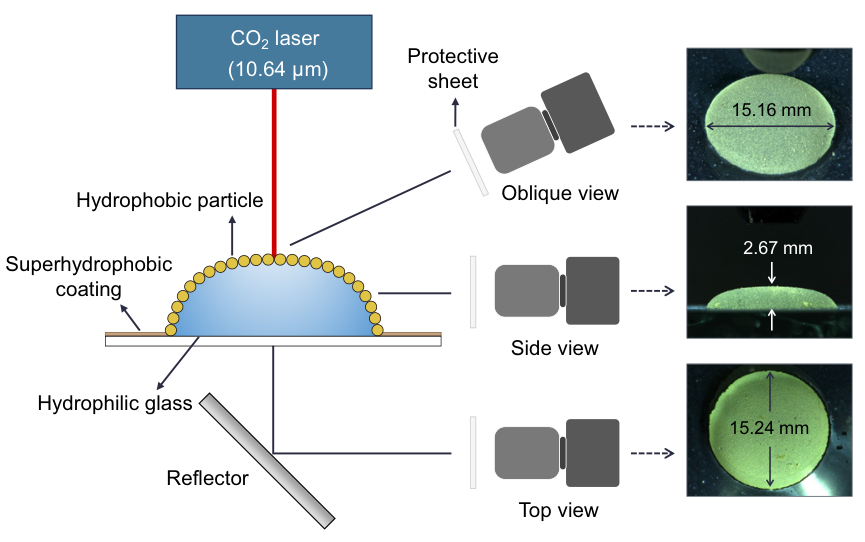
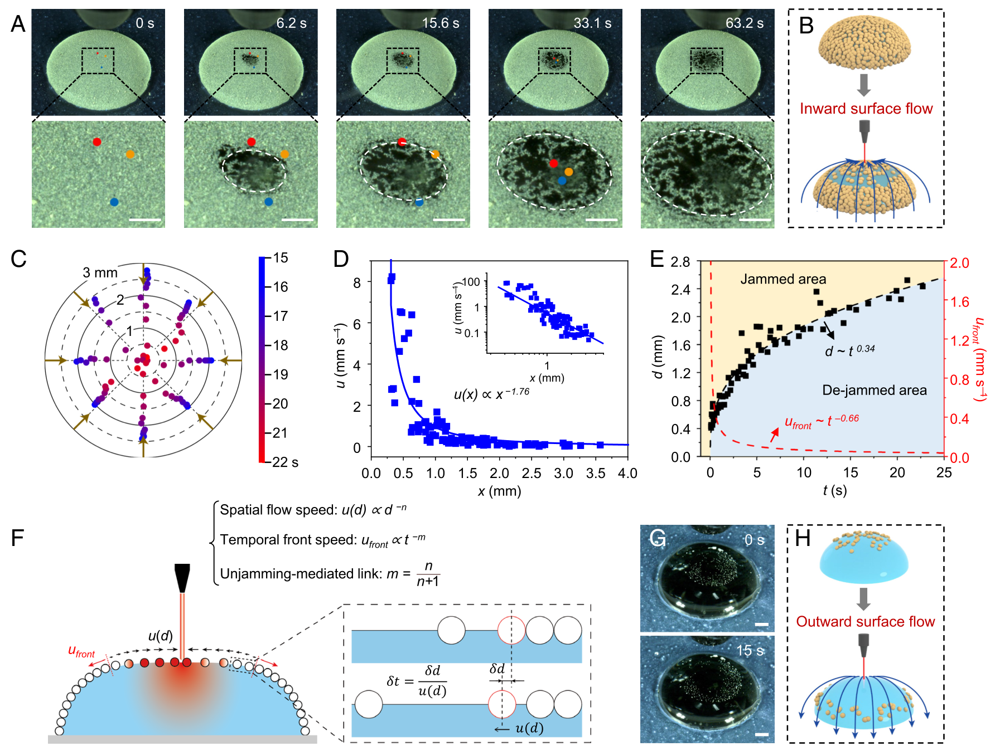
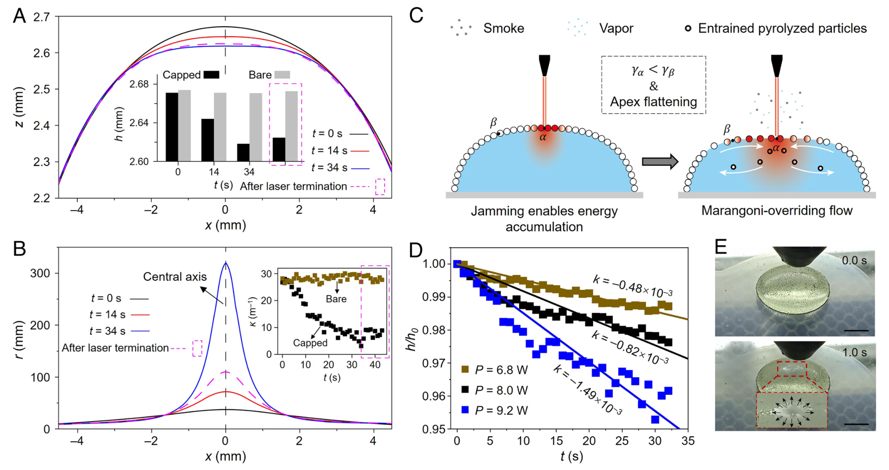
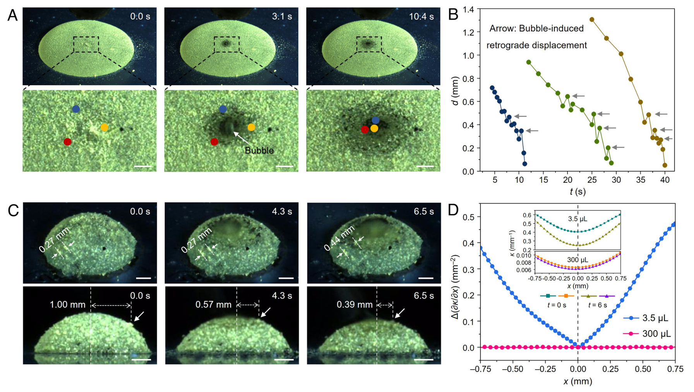
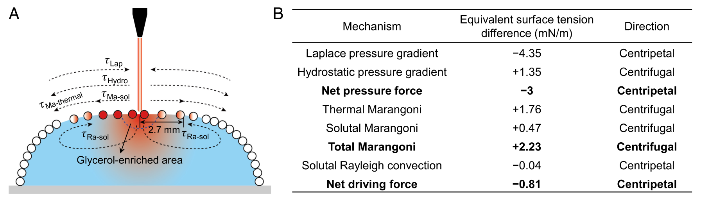

颗粒覆盖的液滴被局部加热后，表面流为什么朝内？
激光加热和蒸发维持了较平的顶端。测得的形貌与流动支持一种解释：曲率产生的毛细压力足以与反向的表面张力作用竞争。
Marangoni-overriding flow in laser-irradiated particle-capped droplets
文章目录
研究背景 · 流向不等于单一驱动力的方向
通常说“液体从低表面张力处流向高表面张力处”，省略了一个重要前提：这是在解释 Marangoni 应力所贡献的流动，不是说真实流场永远只能沿这个方向。压力梯度、体力和边界约束也能贡献速度；多个贡献相加之后，净流向可能与 Marangoni 项相反。
本文使用的颗粒也不只是被动示踪粒子。覆盖率足够高时，颗粒相互接触形成堵塞层，先把吸光颗粒留在激光照射区域。加热破坏局部堵塞后，界面恢复流动，周围颗粒再逐批向中心移动。这使界面力学状态、吸热位置、局部蒸发和自由表面形状形成闭环。
作者要回答两个层次的问题：第一，为什么“热的、表面张力较低的中心”反而吸引表面颗粒？第二，颗粒向内跑，为什么“解除堵塞的前沿”却向外扩展？两者不是同一个速度，也不能混读。
研究方法：先把颗粒锁住，再局部加热
标准液滴体积为300 μL、甘油体积分数70%，覆盖约45 μm直径的疏水石松孢子颗粒。作者让固定在亲水区域的100 μL液滴与200 μL液态弹珠合并，得到接近紧密单层的界面颗粒覆盖；周围超疏水区域限制液滴足迹。形成后的液滴宽约15 mm、高约2.67 mm，明显是受重力影响的扁平液滴，而不是理想球冠微滴。
照射使用10.64 μm激光，标准功率8.0 W，束腰半径约0.2 mm。通过俯视、侧视和斜视分别获取颗粒轨迹、液滴轮廓和前沿位置；温度测量使用浸入液体的热电偶。这里必须区分“液体中热电偶温度”和“吸光颗粒表面温度”：前者不是后者的直接测量。

Figure 1｜实验装置与实际形状
- 回答的问题： 如何得到一个起初不允许颗粒自由迁移、但又能局部解锁的液滴界面？
- 图中证据或方法： 激光照射中央颗粒层；三种成像视角对应界面分布、侧面高度和实际足迹。右侧实拍给出液滴的横向与高度尺度。
- 支撑的结论： 标准系统是具有初始界面堵塞、局部能量输入和明显形状约束的液滴，不能等同于普通裸露小液滴的局部加热。
- 局限与读图注意： 左侧为装置示意，不能据其半球形外观代替右侧真实液滴轮廓；颗粒层存在团聚，不能假定处处是均匀的连续薄壳。
结果一：颗粒向内跑，解堵前沿向外走
激光首先加热并热解中心颗粒，出现颗粒稀疏、可流动的区域。颗粒只有在解堵前沿到达后才开始向内运动。对半径2.0至2.5 mm范围内的8个不同方位示踪粒子，作者观察到最初约15.6 s不动，随后开始向心迁移，并在约6 s内抵达中心。图中烟雾及内部颗粒回流说明颗粒有热降解与进入液体内部等去向，但“热解后亲水性改变”的细节是作者解释，不是本文主图中的独立润湿性测量。

Figure 2｜两种方向相反的运动
- 回答的问题： 观测到的运动是整体颗粒层平移、经典向外 Marangoni 流，还是逐步解堵后的向心流？
- 图中证据或方法： A记录前沿向外扩展且标记颗粒向内移动；C为8条示踪轨迹；D给出速度随距离衰减；E显示前沿随时间扩展变慢；F提出逐个解锁模型；G、H是同为8 W但低颗粒覆盖率时的向外流动对照。
- 支撑的结论： 初始堵塞改变了后续流动状态；颗粒本身的向心迁移速度与界面状态边界的向外传播速度不同。低覆盖率的反向结果使“激光加热本身总会产生向心流”这一解释不成立。
- 局限与读图注意： C的8条轨迹是同一场景中的示踪样本，不能算作8个独立重复实验。距离与速度来自俯视投影，并非沿弧面的测地距离；幂律是有限参数与观测范围内的拟合，不是全空间定律。
空间幂律怎样变成时间幂律
作者测得标准系统的向心速度大小近似满足 u(x) ∝ x^(−n)，n约1.76。离热中心越远，向心拖动越弱；某一圈颗粒要失去原有接触约束，必须经历一个特征位移。前沿越远，完成这一步所需时间越长。
结果二：真正被维持的是一个非平衡曲率场
热中心的蒸发不仅移走质量，也改变界面形状。顶端变平意味着其曲率减小、毛细压力相对降低；相邻仍较弯的区域可以形成指向中心的压力驱动。在静止液滴中，毛细与重力压力原本可以平衡；激光持续局部蒸发则使形状偏离原有平衡，流动去补充蒸发损失，却又把吸光颗粒运来，帮助保持加热。

Figure 3｜形状变化怎样进入机制论证
- 回答的问题： 向心流是否伴随足以改变压力驱动的几何变形？仅提高激光功率能否取代初始堵塞？
- 图中证据或方法： A、B记录顶端高度与曲率变化，关闭激光后部分恢复；D比较6.8、8.0、9.2 W下的归一化高度下降；E显示接近堵塞但尚未堵塞的颗粒层在28 W下仍迅速向外散开。
- 支撑的结论： 标准条件下局部加热、顶端变平和向心流相伴；功率增加加强变平。初始堵塞能把吸光颗粒留在中心，不能在已测范围内简单用更高功率替代。
- 局限与读图注意： 关激光改变的是整个能量输入，不能单独隔离曲率、温度和蒸发三者。28 W对照只支持“在该装置已测试范围中仍需初始堵塞”，不是对任意材料、任意功率的普遍必要性证明。轮廓求曲率涉及高阶几何信息，对拟合与平滑敏感；完整方法在未复核的补充材料中。
标准实验中，作者报告34 s内顶端曲率半径由37.5 mm增至约350 mm；顶端由弯变平，不代表整个液滴“张力变大”。6.8至9.2 W时，高度归一化下降速率增至约3.1倍，这支持蒸发强度可调。作者提出的闭环是：颗粒被固定吸光 → 顶端强蒸发与变平 → 向心毛细压力驱动 → 新颗粒补入热中心 → 非平衡形状得以维持。
结果三：如何排除“甘油变浓后下沉”的替代解释
在甘油水混合物里，水优先蒸发会使局部甘油浓度升高。这样既会改变表面张力，也会改变密度；密度驱动的内部循环可能造成类似的表面向心运动。因此，仅画一个回流箭头并不足以把机制归给毛细压力。

Figure 4｜两个互补的机制辨别实验
- 回答的问题： 向心流是否必须依赖二元液体的溶质梯度或浮力对流？
- 图中证据或方法： A、B在300 μL纯水液滴中仍看到整体向心示踪运动；C在3.5 μL、80 vol%甘油水液滴中仍观察到解堵与向心迁移；D比较相同组成大小液滴加热前后的曲率梯度变化。
- 支撑的结论： 纯水对照排除了“溶质效应是必要条件”；小液滴低浮力条件仍有向心流，与毛细压力解释相容。小滴在同一0.75 mm径向位置的速度约1.7 mm/s，大滴约0.95 mm/s，作者同时给出小滴更强的曲率梯度变化。
- 局限与读图注意： 纯水轨迹中有气泡造成的短时反向位移；约55 °C为顶端下方液体温度，不能由此排除所有局部热点。小滴的Ar约0.45及所引临界尺度约1属于本文所采用的判据背景，不应当作所有几何的通用失稳阈值。改变液滴大小也改变形状与加热几何，因此不是只改变浮力的完美单变量实验。
严格的表述是：这些对照显著削弱了“溶质/浮力是主要起因”的解释，并与毛细压力占优吻合；它们不能逐点测出每一种体力，也不能证明混合物中的浮力贡献严格为零。
关键公式：把净表面流拆成压力项与张力项
在低雷诺数、小界面斜率、近似平坦的局部区域，作者采用润滑近似。取x沿表面水平径向、z为厚度方向，h为局部液深，μ为动力黏度，γ为表面张力，式(1)和式(2)为：
∂p/∂x = μ ∂²u/∂z²
us = −[h²/(2μ)] ∂p/∂x + (h/μ) ∂γ/∂x
第一项是压力推动的速度贡献，第二项是表面张力梯度贡献。即使第二项向外，只要第一项向内且绝对值更大，净表面速度就向内。黏度同时降低两个速度贡献；仅把黏度调大、看到速度变慢，不能据此辨别是哪一个机制。局部h对两项的权重也不同：压力项带h²，Marangoni项带h。
这是一条很适合Leon使用的判断式，但有边界：它给的是表面速度。深度积分净通量、内部涡旋、局部膜厚增长和表面轨迹不是同一个量，不能互相代替。

Figure 5｜定量证据及其计算边界
- 回答的问题： 毛细压力驱动是否真的大到足以压过其他项，而不只是方向说得通？
- 图中证据或方法： 在标准液滴t=14 s、距中心0至2.7 mm区域，作者用润滑近似将各机制换算为可比较的表面张力差等效量；B中给出每项方向与数值。
- 支撑的结论： 图中毛细压力贡献−4.35 mN/m，重力压力贡献+1.35 mN/m，合计压力项−3.00 mN/m；热/溶质Marangoni合计+2.23 mN/m；溶质Rayleigh贡献−0.04 mN/m。作者得到净值−0.81 mN/m，方向向心，与观测一致。
- 局限与读图注意： 这些是通过实测输入与模型换算的贡献，不是五个独立力传感器读数。局部Re约0.14与小斜率支持近似，但不能据此覆盖整个液滴及颗粒堵塞区。原文等效量的定义还有下述量纲记号问题，重算前应核对补充推导。
原文记号的一个需核对点
论文证据到底推进了多远
| 层次 | 本文实际提供的证据 | 不应升级成的结论 |
|---|---|---|
| 现象 | 起初堵塞体系的颗粒向心流、解堵前沿向外传播 | 所有受热液滴都向热中心流 |
| 形状耦合 | 顶端变平、功率依赖、关激光后部分恢复 | 单一几何变量已被完全独立操控 |
| 替代机制辨别 | 低覆盖率、高功率近堵塞、纯水和小滴对照 | 所有浮力及化学效应严格为零 |
| 定量模型 | 局部润滑应力数量级支持压力项占优 | 整个液滴全时空流场已预测并验证 |
| 动力学标度 | 空间速度指数与前沿时间指数接近解锁模型关系 | 已证明唯一微观接触解锁定律 |
局限与最容易误读的地方
- Marangoni没有“失效”或反向。 反向的是总表面流；热与溶质Marangoni贡献在作者分析中仍主要向外。
- 颗粒不是无扰动示踪物。 它们决定界面堵塞和吸热分布，还会热解、团聚与进入液体内部，不能把轨迹无条件当作洁净界面流速。
- 本研究没有建立自发振荡或Hopf失稳。 解堵前沿减速和局部气泡扰动不是周期振荡证据。
- 参数辨别充分程度有限。 主文给出了有力的互补对照，但没有在本文图中展示所有实验重复数、完整不确定度传播和空间应力测量；SI未独立复核。
- 不能直接套到薄膜。 扁液滴有足迹约束、液深变化、颗粒层和集中激光输入。迁移到蒸发液膜需重新写边界条件、压力场及能量方程。